Function Declarations · Function Definitions · Statements · Expression Contexts · Block · Break Statement · Case Label · Continue Statement · Default Label · Do Statement · Expression Statement · For Statement · Goto Label · Goto Statement · If Statement · If-Else Statement · Null Statement · Return Statement · Switch Statement · While Statement · Function Calls
You write functions to specify all the actions that a program performs when it executes. The type of a function tells you the type of result it returns (if any). It can also tell you the types of any arguments that the function expects when you call it from within an expression.
This document shows how to declare a function. It describes all the statements you use to specify the actions that the function performs. And it shows what happens when you call a function.
When you declare a function, you specify the type of result it returns. If the function does not return a value, then you declare it to return a void type. Otherwise, a function can return any object or incomplete type except an array type or a bitfield type. (The type must be complete before any call to the function.)
You can also declare the types of the arguments that the function
expects. You write a list of one or more declarations separated by
commas and enclosed within the parentheses of the function decoration.
If the function does not expect any arguments, you write only the
keyword void.
For example:
void reset(void); no arguments, no return double base_val(void); no arguments, double return
If the function expects a fixed number of arguments, you declare a corresponding function parameter for each of them. You list the parameter declarations in the same order that the arguments appear in a call to the function. You can omit the names of any of the parameters if you are not also defining the function.
void seed(int val); one int argument int max(int, int); two int arguments
The translator converts a parameter declared with type array of T to type pointer to T. It converts a parameter declared with type function returning T to type pointer to function returning T. Otherwise, each parameter must have an object type.
int scanx(char a[]); changed to char *a void callit(int f(void)); changed to int (*f)(void)
If the function expects a
varying number
of arguments, you end the list of parameters
with an ellipsis (...). You must write
at least one parameter declaration before the ellipsis.
char *copy(char *s, ...); one or more arguments
Here, the function copy has a mandatory argument of type
pointer to char. It can also accept zero or more additional
arguments whose number and types are unspecified.
All the function declarations shown above that provide type information about the arguments within the function decoration are called function prototypes.
You can also declare a function and not provide information about the number or types of its arguments. Do not write declarations within the parentheses of the function decoration.
double bessel(); no argument information
Here, the function bessel has some fixed, but unspecified,
number of arguments, whose types are also unspecified.
You can create an implicit declaration for a function within an expression. If the left operand of a function call operator is a name with no visible declaration as a function, object, enumeration constant, or type definition, then the translator declares it in the current name space as a function returning int without argument information. The name has external linkage. It is much better, however, to declare all functions explicitly before you call them.
y = min(a, b); implies extern int min();
The translator uses argument type information to check and to convert argument expressions that you write when you call the function. The behavior is as if the argument value is assigned to the object corresponding to the parameter. When you specify no type information for an argument, the translator determines its type by promoting the type of the argument expression.
You define a function by writing a function definition, a special form of declaration that ends with a block:
Within the block you write any declarations visible only within the function, and the sequence of statements that specifies the actions that the function performs when you execute it. Any statement can be another block, containing additional declarations and statements.
The declarator part of a function definition must contain a name for the function. The name must have a function type. The declarator must also contain a function decoration that names the parameters for the function. In a function prototype that is also a function definition, you cannot omit any of the parameter names. Some examples are:
int min(int a, int b)
{
return (a < b ? a : b);
}
void swap(char *x, char *y)
{
char t;
t = *x, *x = *y, *y = t;
}
Here, the function definitions for both
min and swap
also serve as function prototypes. Wherever these names are visible
later in the translation unit, the translator uses the argument type
information to check and convert argument expressions on any calls
to these functions.
You can also define a function and not provide argument information. (Do not use this capability in programs that you write: It is retained in Standard C only to support programs written in older C dialects.)
You define a function without arguments by writing a function decoration with empty parentheses. For example:
void clear_error() no arguments, no information
{errno = 0; }
You define a function with arguments that provides no argument information for subsequent checking and conversion during function calls by writing a list of parameter names within the function decoration. You declare the parameters in a sequence of zero or more parameter declarations before the block part of the function definition.
long lmax(a, b)
long a, b;
{return (a < b ? b : a); }
You can declare the parameters in any order. You declare each parameter no more than once. If you do not declare a parameter, the translator takes its type as int. To avoid an ambiguity, do not write a parameter name that is visible as a type name.
A function that you define without parameter information is compatible with a function prototype that specifies:
You express the actions that a function performs by writing statements within the block part of a function definition. Statements evaluate expressions and determine flow of control through a function. This section describes each statement and how it determines flow of control.
When you call a function, control passes to the first statement within the block part of a function definition. Except for the jump statements (break, continue, goto, and return), each statement within a block passes control (after it has completed its execution) to the next statement within the block. Some statements can execute a contained statement repeatedly, and some can execute a contained statement only when a certain condition is true, but all these statements pass control to the next statement within the block, if any. If a next statement is not within the block, control passes to the statement following the block.
Because no statement follows the block part of a function definition, the translator inserts a return statement (without an expression) at the end of that block. A return statement returns control to the expression that invoked the function.
You can write a sequence of declarations at the beginning of each block. When control enters the block, the program allocates any objects that you declare within the block with dynamic duration. The program allocates these objects even if control enters the block via a jump to some form of label (case, default, or goto) within the block.
A dynamic initializer behaves just like an expression statement that assigns the initializer to the object that you declare. Any dynamic initializers that you specify within a block form a sequence of statements that the translator prefixes to the sequence of statements within the block. If control enters the block via a jump to some form of label within the block, these initializers are not executed.
In the descriptions that follow, a syntax diagram shows how to write each statement. A verbal description tells what the statement does, and then a flowchart illustrates the flow of control through the statement:
A jump statement causes control to pass to another designated target.
Expressions appear in three different contexts within statements:
In a test context, the value of an expression causes control to flow one way within the statement if the computed value is nonzero or another way if the computed value is zero. You can write only an expression that has a scalar rvalue result, because only scalars can be compared with zero. A test-context expression appears within a flowchart inside a diamond that has one arrow entering and two arrows leaving it.
In a value context, the program makes use of the value of an expression. A return statement, for example, returns the value of any expression you write as the value of the function. You can write only an expression with a result that the translator can convert to an rvalue whose type is assignment compatible with the type required by the context. A value-context expression appears within a flowchart inside a rectangle with one arrow entering it and one arrow leaving it. (It does not alter the flow of control.)
In a side-effects context, the program evaluates an expression only for its side effects. A side effect is a change in the state of the program that occurs when evaluating an expression. Side effects occur when the program:
You can write only a void expression (an arbitrary expression that computes no useful value or discards any value that it computes) or an expression that the translator can convert to a void result. A side-effects context expression appears within a flowchart inside a rectangle with one arrow entering it and one arrow leaving it. (It does not alter the flow of control.)
A block lets you write a series of declarations, followed by a series of statements, in a context where the translator permits only a single statement.

You also use it to limit the visibility or duration of declarations used only within the block. Using the notation:
{ decl-1; decl-2; ... decl-n;
stat-1; stat-2; ... stat-n; }
the flowchart for a typical block is:

For example:
if ((c = getchar()) != EOF)
{
putchar(c);
++nc;
}
A break statement transfers control to the statement following the innermost do, for, switch, or while statement that contains the break statement. You can write a break statement only within one of these statements.

The flowchart for a break statement is:

For example:
for (s = first; s[0]; ++s)
if (s[0] == escape && s[1] == wanted)
break; leave the for statement
A case label serves as a target within a switch statement. It has no other effect on the flow of control, nor does it perform any action. The expression is in a value context and must be an integer constant expression.

The flowchart for a case label is:
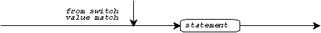
For example:
switch (c = getchar())
{
case EOF:
return;
case ' ':
case '\n':
break;
default:
process(c);
}
A continue statement transfers control out of the statement controlled by the innermost do, for, or while statement that contains the continue statement. It begins the next iteration of the loop. You can write a continue statement only within one of these statements.

The flowchart for a continue statement is:

For example:
for (p = head; p; p = p->next)
{
if (p->type != wanted)
continue;
process(p);
}
A default label serves as a target within a switch statement. Otherwise, it has no effect on the flow of control, nor does it perform any action.

The flowchart for a default label is:

For example:
switch (lo = strtol(s, NULL, 10))
{
case LONG_MIN:
case LONG_MAX:
if (errno == ERANGE)
oflo = YES;
default:
return (lo);
}
A do statement executes a statement one or more times, while the test-context expression has a nonzero value.

Using the notation:
do
statement
while (test);
the flowchart for a do statement is:
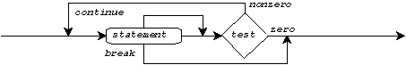
If the program executes a break statement within the controlled statement, control transfers to the statement following the do statement. A break statement for this do statement can be contained within another statement (inside the controlled statement) but not within an inner do, for, switch, or while statement.
If the program executes a continue statement within the controlled statement, control transfers to the test-context expression in the do statement. A continue statement for this do statement can be contained within another statement (inside the controlled statement) but not within an inner do, for, or while statement.
For example:
do
putchar(' ');
while (++col % cols_per_tab);
An expression statement evaluates an expression in a side-effects context.

The flowchart for an expression statement is:
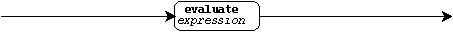
For example:
printf("hello\n"); call a function
y = m * x + b; store a value
++count; alter a stored value
A for statement executes a statement zero or more times, while the optional test-context expression has a nonzero value. You can also write two side-effects context expressions in a for statement.

The program executes the optional expression,
called se-1
below, before it first evaluates the test-context expression. (This
is typically a loop initializer of some form.) The program executes
the optional expression, called se-2 below,
after it executes the controlled statement each time.
(This is typically an expression
that prepares for the next iteration of the loop.) If you write no
test-context expression, the translator uses the expression 1,
and therefore executes the statement indefinitely.
Using the notation:
for (se-1; test; se-2)
statement
the flowchart for a for statement is:

If the program executes a break statement within the controlled statement, control transfers to the statement following the for statement. A break statement for this for statement can be contained within another statement (inside the controlled statement) but not within an inner do, for, switch, or while statement.
If the program executes a
continue statement within the
controlled statement, control transfers to the expression that the
program executes after it executes the controlled statement
(se-2 above). A continue statement
for this for statement can be contained within another statement
(inside the controlled statement)
but not within an inner do, for, or while statement.
For example:
for (i = 0; i < sizeof a / sizeof a[0]; ++i)
process(a[i]); for each array element
for (p = head; p; p = p->next)
process(p); for each linked list item
for (; ; ) forever
do_x(get_x());
A goto label serves as the target for a goto statement. It has no other effect on the flow of control, nor does it perform any action. Do not write two goto labels within the same function that have the same name.
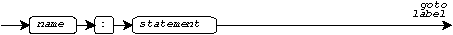
The flowchart for a goto label is:
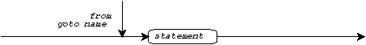
For example:
panic: jump here if hopeless
printf("PANIC!\n");
close_all();
exit(EXIT_FAILURE);
A goto statement transfers control to the goto label (in the same function) named in the goto statement.

The flowchart for a goto statement is:

For example:
if (MAX_ERRORS <= nerrors)
goto panic;
An if statement executes a statement only if the test-context expression has a nonzero value.
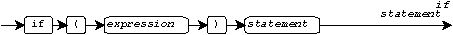
Using the notation:
if (test)
statement;
the flowchart for an if statement is:
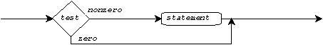
For example:
int t;
if (a < b)
t = a, a = b, b = t; swap a and b
An if-else statement executes one of two statements, depending on whether the test-context expression has a nonzero value.
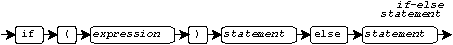
Using the notation:
if (test)
statement-1
else
statement-2
the flowchart for an if-else statement is:
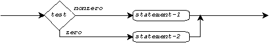
For example:
if (min < 0) do one of three cases
printf("loss is %d\n", -min);
else if (min == 0) second if-else statement
printf("break even\n");
else
printf("gain is %d\n", min);
A null statement does nothing. You use it where the translator requires a statement but you do not want to perform an action.
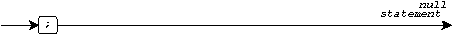
The flowchart for a null statement is:

For example:
if (done)
while (getchar() != EOF)
; nothing else to do
A return statement terminates execution of the function and transfers control to the expression that called the function. If you write the optional expression (a value-context expression) within the return statement, the rvalue result must be assignment compatible with the type returned by the function. The program converts the value of the expression to the type returned and returns it as the value of the function call. If you do not write an expression within the return statement, the program must execute that return only for a function call that occurs in a side-effects context.
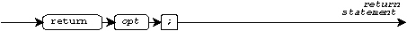
Using the notation:
return expression;
the flowchart for a return statement is:

For example:
if (fabs(x) < 1E-6)
return (x);
(The consistent use of parentheses around the expression part of a return statement, in this document, is a matter of style, not necessity.)
A switch statement jumps to a place within a controlled statement, depending on the value of an integer expression. The controlled statement is almost invariably a block. The expression is in a value context.

The program evaluates the expression and then compares the value with each of the case labels contained in the controlled statement. A case label can be contained within another statement (inside the controlled statement) but not within an inner switch statement.
Each case label contains an integer constant expression whose value is converted to the promoted type of the expression in the switch statement before it is compared to the value of that expression. Do not write two case labels whose expressions have the same converted value within the same switch statement.
If the value of a case label expression equals the value of the switch statement expression, control transfers to the case label. Otherwise, control transfers to a default label contained within the switch statement. A default label can be contained within another statement (inside the controlled statement) but not within an inner switch statement. You can write no more than one default label within a switch.
If you do not write a default label, and the value of the switch statement expression does not match any of the case label expressions, control transfers to the statement following the switch statement.
If the program executes a break statement within the controlled statement, control transfers to the statement following the switch statement. A break statement for this switch statement can be contained within another statement (inside the controlled statement) but not within an inner do, for, switch, or while statement.
A switch statement takes many forms. Using the representative example:
switch (expr)
{
case val-1:
stat-1;
break;
case val-2:
stat-2; falls through to next
default:
stat-n
}
the flowchart for this particular switch statement is:
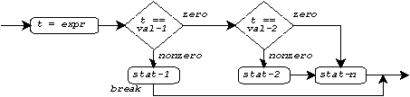
For example:
switch (*s)
{
case '0':
case '1':
case '2':
case '3':
val = (val << 2) + *s - '0';
break;
default:
return (val);
}
A while statement executes a statement zero or more times, while the test-context expression has a nonzero value.
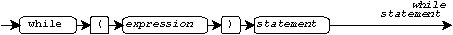
Using the notation:
while (test)
statement
The flowchart for a while statement is:
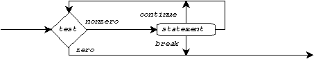
If the program executes a break statement within the controlled statement, control transfers to the statement following the while statement. A break statement for this while statement can be contained within another statement (inside the controlled statement) but not within an inner do, for, switch, or while statement.
If the program executes a continue statement within the controlled statement, control transfers to the test-context expression in the while statement. A continue statement for this while statement can be contained within another statement (inside the controlled statement) but not within an inner do, for, or while statement.
For example:
while ((c = getchar()) != EOF)
process(c);
You call a function by writing a function call operator within an expression. When the program evaluates the expression, it suspends execution of the statement containing the expression and transfers control to the first statement in the block that defines the actions of the called function. Objects with dynamic duration remain in existence for the block containing the function call. A function can call itself, or call another function that calls it, recursively. The program allocates a separate set of objects with dynamic duration for each activation of a function.
Before the called function gets control, the program stores
the value of each argument expression in a newly allocated object
associated with the corresponding
parameter. You access the object
corresponding to the named parameter by writing the parameter name.
Unless you declare the parameter to have a const type, you
can also alter the value stored in its object. You can access the
values stored in the unnamed arguments to a function with a
varying number of arguments
by using the macros defined in the standard header
<stdarg.h>. When
the function returns control to its caller, it deallocates the objects
created to hold argument values.
When a function executes a return statement, it returns control to its caller. You call a function returning a void type, or any function that executes a return statement without an expression (either explicit or implicit), only from a side-effects context. Any other function call is an rvalue expression whose type is the type returned by the function and whose value is the value of the expression in the return statement.
When you call a function with a fixed number of arguments, write exactly as many arguments as the function has parameters. When you call a function with a varying number of arguments, write at least as many arguments as the function has parameters (before the ellipsis).
The type of the function can provide information about the type of an argument if it corresponds to one of the declared parameters in a function prototype. In this instance, the argument expression must be assignment compatible with its corresponding parameter. Its value is converted as if by assignment before it is stored in the parameter object.
For example:
double fun(double); y = fun(0); integer 0 converted to double
The type of the function can also fail to provide any information about an argument, if the function declaration is not a function prototype or if the argument is one of the unnamed arguments in a varying number of arguments. In this instance, the argument must be an rvalue expression that is promoted as follows:
Any other argument expression type is unchanged when promoted.
For example:
char ch;
int i;
float f(), a[10];
f( a, array becomes pointer to float
f, function becomes pointer to function
i, int remains int
ch, char becomes int or unsigned int
a[2] ); float becomes double
A function call you write for a function that does not have argument information behaves the same as one for a function prototype that specifies:
All declarations for the same function must be compatible. While these rules permit you to write compatible function declarations with and without argument information, you should write only function prototypes.
See also the Table of Contents and the Index.
Copyright © 1989-1996 by P.J. Plauger and Jim Brodie. All rights reserved.